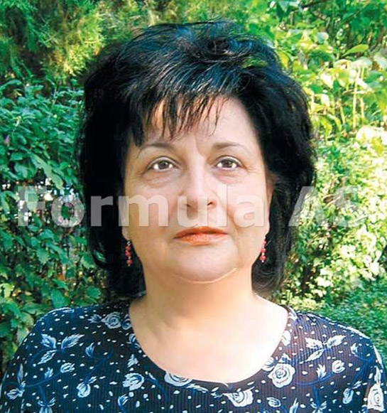
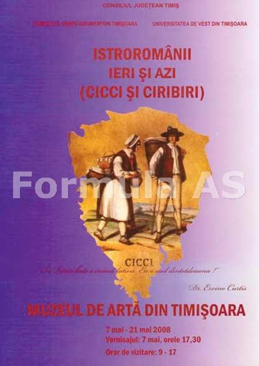
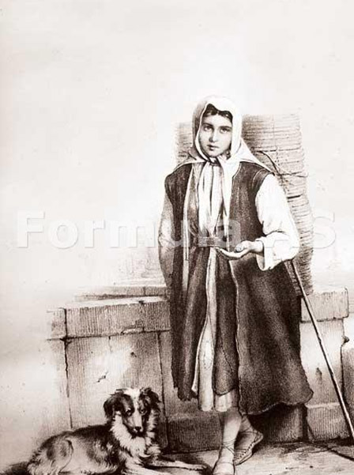
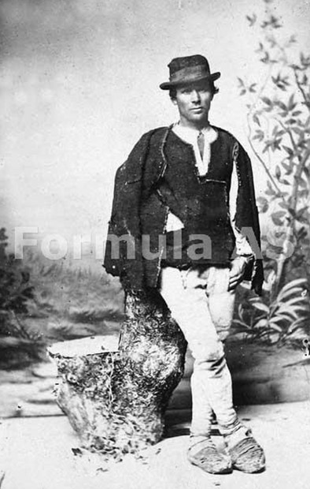
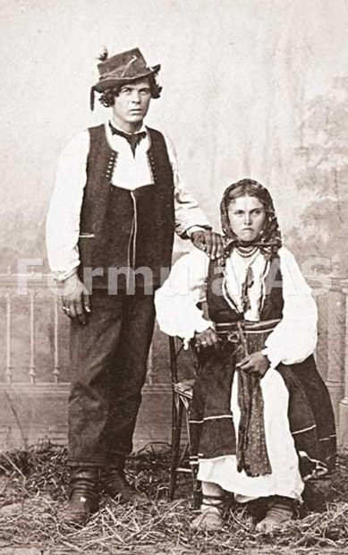

 Doamna Viorica Bălțeanu este profesor universitar doctor la Universitatea de Vest din Timișoara, istoric literar, traducător și lingvist. Domeniile sale predilecte de cercetare sunt italienistică și dialectele sud-dunărene ale limbii romane. I-am adresat câteva întrebări în legătură cu istroromânii, o preocupare constanta a revistei "Formula As."
Un exod de proporții biblice
În urmă cu trei ani, revista noastră a efectuat o călătorie în Croația, pe urmele istroromânilor, frații noștri istorici, aproape uitați. Cum ați ajuns să vă apropiați de această temă?
Am avut norocul unor dascăli excepționali, la Facultatea de Filologie timișoreana, în răstimpul 1965-1970. Pe seama temei în discuție, țin să evoc incitantele seminarii de dialectologie ținute de domnul Vasile Frățilă, în prezent, cel mai important cercetător al dialectului istroromân. Pe atunci, în Peninsula Istria viețuiau cam două mii de istroromâni. Au mai rămas câteva sute. Cei mai mulți pribegiseră în ultimele luni ale conflagrației mondiale, spre a nu-și găsi sfârșitul în foibe, dar și de teama altor forme de prigoană. Alții au plecat în deceniile următoare, în căutarea unui trai mai bun. Destinația principală a fost Italia, însă și alte țări europene. Puternice comunități istroromâne există și în America de Nord, în Australia.
Mulți cititori nu cunosc termenul foiba...
Din nefericire, există și verbul a înfoiba. În teritoriul despre care vorbim, zona carstică, cu un fel de crevase foarte adânci, numite local foiba, și-au aflat tragicul sfârșit mulți italieni și istroromâni. Vreo zece mii. Sârbii au operat ceea ce se numește în termeni foarte cinici "curățenie etnica." Era ucis prin împușcare un "inamic" din rândul populației civile, altul era rănit, ambii legați fedeleș unul de altul și aruncați în foiba, care putea atinge chiar și profunzimea de 200 de metri. Nimeni nu avea permisiunea de a-l salva pe cel încă viu. S-a produs un exod de proporții biblice, peste 300.000 de oameni de pe Coasta Dalmată refugiindu-se în afara teritoriului ce urma să se numească, preț de o jumătate de veac, Iugoslavia. Sunt răni foarte dureroase, redeschise de războiul balcanic din deceniul trecut. Milioane de oameni, pe care acea tragedie i-a atins direct, ne sunt contemporani. Supraviețuitori, frați, fii, nepoți, strănepoți ai acestora, prieteni.
Cum reușiți să va înțelegeți cu istroromânii?
Le pricep în mare măsură dialectul, dar ne înțelegem chiar fără nici o dificultate în limba italiană. Mulți istroromâni fac naveta în Italia, unii au studiat acolo. Foarte buni cunoscători ai dialectului sunt, în schimb, profesorii Vasile Frățilă și Richard Sârbu, de la Universitatea de Vest din Timișoara, profesorul Petru Neiescu, de la Universitatea "Babeș-Bolyai" din Cluj-Napoca, profesorul Nicolae Saramandu, din București, doctorul Emil Petru Rațiu, de la Roma.
Tot italiana a făcut posibilă și apropierea de fascinantele realități istroromânești (acești frați ai noștri trăiesc în apropierea Marii Adriatice, în câteva sate de pe Monte Maggiore (Učka Gora), în Croația) a soților Ervino Curtis și Elena Pânzătescu. șotii Curtis dețin o impresionantă colecție de documente, cărți, obiecte, ce mărturisesc lucruri uimitoare despre istroromâni. Au organizat manifestări internaționale de anvergură, prin care au readus în atenția instituțiilor europene și a specialiștilor aceste tematici. O destul de recentă manifestare științifică importantă s-a desfășurat între 16 iunie și 16 iulie 2007, când în palatul Costanzi al Primăriei din Trieste, peste 3.000 de vizitatori din toată lumea au examinat cu uimire zecile de exponate, beneficiind de explicațiile lui Ervino Curtis, care este și un poliglot redutabil.
Ce trebuie făcut pentru ca dialectul să nu dispară curând?
Nu este simplu. Istroromânii înșiși trebuie să conștientizeze că sunt o realitate unică, un miracol istoric. Strămoșii lor au plecat din Maramureș (dialectul prezintă fenomenul rotacismului, ca și graiul maramureșean), se spune în teoria cea mai acreditată. Acest lucru s-a petrecut în urma cu opt secole. S-au așezat lângă Adriatica și pe insula Veglia, au supraviețuit acolo, ocupându-se cu oieritul, albinăritul, unii au fost cărbunari. Pregăteau cărbunele de lemn și îl duceau spre comercializare la Trieste și în alte locuri. Între cele doua războaie mondiale, Regatul României a finanțat punerea în funcțiune a unei fabrici de postav. A fost un răstimp fast pentru istroromâni, însă curmat de nenorocirile războiului. De câțiva ani, dialectul istroromân ocupă locul 21 pe lista întocmita de Consiliul Europei: numai alte patru idiomuri de pe continent sunt mai periclitate să dispară, pe termen scurt, înaintea acestui dialect. Putini tineri îl mai învăță. Ba, unii îl cunosc, dar se sfiiesc (nu vreau să cred că se tem) să-l vorbească în public. Ce tragic!
Între a fi și a nu fi
Expoziția de la Trieste a fost adusă și în România, un eveniment în care ați fost implicată direct.
 Într-adevăr, între 7-21 mai 2008, am izbutit să aducem expoziția și în România, la Muzeul de Arta din Timișoara. Vernisajul a fost memorabil, onorat de prezenta unor intelectuali de seamă. Au fost cu noi și doi fruntași istroromâni: Mauro Doričić și Vilim Sancović. Între 2-4 iulie, Grupul folcloric Zvoncari (Clopotarii) din Jaieni (Žejane) au fost primiți cu multă căldura de publicul timișorean, la Festivalul Inimilor. La ambele evenimente a ținut să fie de față cercetătoarea Ramona Elena Potoroacă, de la Muzeul Astra din Sibiu, care s-a și deplasat în Istria, în acea vară. Domnul prof. dr. Corneliu Ioan Bucur, fostul director al Muzeului sibian Astra, a organizat în 5-6 septembrie 2008 trei semnificative momente de cultura înaltă: vernisarea expoziției lui Ervino Curtis, o sesiune științifică în colaborare cu Universitatea de Vest timișoreană și un spectacol al Clopotarilor, în Piața Mare a urbei de pe Cibin. Din partea Ambasadei Croației la București, a participat domnul consilier Tomislav Vlahutin. O delegație de croați din România a venit de la Carașova. Cu toții le-au explicat istroromânilor ca ei înșiși trebuie să solicite, în scris, autorităților croate recunoașterea comunității lor. De fapt, ei există, dar... nu există. Croații din preajma Reșitei au școli în limba maternă, un Centru Cultural splendid, un reprezentant în Parlament. Istroromânii nu au nimic, nici măcar nu sunt recunoscuți ca entitate etnică și lingvistică. Mai există o modalitate concretă de a-i sprijini. Ervino Curtis organizează excursii cu autocarul, de câțiva ani. Duminica dimineața, grupul pleacă de la Trieste, se merge la liturghie (istroromânii au trecut la catolicism de multă vreme), se fac drumeții prin pădure. La prânz, musafirii se ospătează din bucatele proaspăt preparate de localnici, închina un pahar de vin curat din producția sătenilor. Vizitează localitățile din zona, sporovăiesc cu gazdele, iar pe înserat, se întorc la Trieste.
Petrec o zi de neuitat, plătind un preț cu totul modic. Ei bine, niște operatori turistici inteligenți din România ar putea include măcar o jumătate de zi din pachetul de vacanță pe Coasta Dalmată, acolo printre istroromâni, adăugând o prețioasă componentă culturală sejurului. Localnicii sunt ospitalieri, au case frumoase, cu utilități moderne. Tinerii istroromâni vorbesc bine italiana, engleza, pe lângă limba croată.
S-a afirmat că ar exista și în Slovenia, o altă țară fost iugoslavă, urme de istroromâni.
 Afirmația a fost făcuta de Vlad Cubreacov, într-un interviu, și am ținut să ne convingem și noi daca exista sau nu istroromâni ori amintiri despre ei în satele Grobnic și Polijane, de lângă Capodistria (Koper). Tentativa noastră de a afla cum stau lucrurile a fost concretizata de domnul profesor Stanciu, lectorul roman de la Universitatea din Liubliana, care, împreună cu studenți ai domniei sale, s-a deplasat, în luna septembrie, în cele două mici localități de munte, unde nu au găsit nici măcar amintiri despre istroromâni, deși inclusiv cercetători din Austria și din alte țări socotesc că investigațiile lingvistice în Slovenia încă nu trebuie abandonate. În primăvara acestui an, Regiunea Istria din Slovenia a finanțat un DVD dedicat dialectului istroromân. Realizare lăudabilă, dar bizar este că acesta e prezentat, inclusiv pe internet, ca dialect... romanic, iar nu ca dialect românesc, deși însuși numele dialectului este foarte explicit, fiind și singurul termen acreditat de comunitatea științifica internațională în ansamblul său.
 Doresc să subliniez un lucru excepțional. Anul acesta, cu prilejul unui seminar internațional, am avut privilegiul de a-l ovaționa pe Dario Masusić, un muzician de mare finețe, un redutabil specialist în arheologie muzicală, având cultură foarte solidă. Fiecare cântec cules de el este interpretat cu acompaniament de chitara și de instrumente tradiționale vechi. Ei bine, ce emoție uimitoare a fost să-l auzim cântând o frumoasă baladă de dragoste în dialect istroromân. După excelentul recital, am stat de vorba. știe enorm de multe lucruri despre folclorul nostru, ar dori să vadă și să reconstruiască instrumentele vechi duse de Theodor Burada la Iași, în urma cu 120 de ani.
Responsabilități uriașe
Aveți o energie profesională de invidiat, mai ales pentru aceste vremuri de criza, când totul pare blocat. Ce mai aveți în agenda?
 De Ziua Latinității, în 15 mai 2010, ca romanistă, am în vedere organizarea Simpozionului internațional Meglenoromânii - ieri și azi, la care vor participa reprezentanți ai tuturor comunităților românești din statele din vecinătatea României. Domnul rector Ioan Tălpoș este un mare iubitor al calității actului didactic, pe care îl vede, pe bună dreptate, desfășurat în indisolubilă legătură cu activitatea științifică, cu activitatea culturală, în sens amplu. Vom putea conta mereu pe sprijinul domniei sale, ca și pe acela al doamnei decan Otilia Hedeșan. Ca italienistă, voi fi alături de colegii din țară și din străinătate, spre a marca prin contribuții științifice aniversarea Catedrei de Limba italiană de la Universitatea din București, ce împlinește un secol, în aceste zile. Desigur, am și cărți și studii sub tipar, ca autor și ca traducător. Mă bucur enorm că funcționează excelent Masterul nostru Civilt italiana e cultura europea, frecventat și de studenți de la universități italiene partenere. Rezultatele studenților - materializate în prestigioase premii internaționale și la nivel național - ne dau satisfacții deosebite. Spre a progresa în continuare, ne așteaptă multa muncă, de care nu ne temem, nici eu, nici tinerii mei colaboratori. Prestigiul României în lume, ca și respectul posterității depind, în foarte consistentă măsura, de clarviziunea și munca neobosită a intelectualității responsabile, de la care ar fi bine să ia pildă și politicienii. Eu nu voi lipsi de la vot. Soarta țării mele, viitorul urmașilor noștri trebuie să ne intereseze în cel mai înalt grad.
Aurora Petan
November 6, 2009
© 2009 Formula As